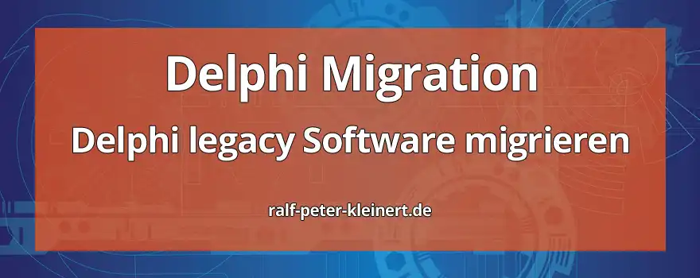

Die Migration von alter Legacy-Delphi-Software, insbesondere von Delphi 7 auf die neueste Version, Delphi 10, birgt Herausforderungen und Chancen. Die Aktualisierung ermöglicht den Zugang zu modernen Funktionen, Sicherheitsverbesserungen und Leistungssteigerungen. Jedoch erfordert dies eine gründliche Planung, Tests und Anpassungen, um Kompatibilitätsprobleme zu lösen und das volle Potenzial der neuen Plattform auszuschöpfen. Eine sorgfältige Analyse der Codebasis, die Aktualisierung von Bibliotheken und die Überprüfung von Drittanbieterkomponenten sind entscheidend für einen reibungslosen Übergang. Mit der richtigen Vorbereitung kann die Migration zu einer verbesserten Entwicklungs- und Wartbarkeitsumgebung führen, die die Zukunftsfähigkeit Ihrer Anwendung gewährleistet.
Insbesondere im Bezug auf die IT-Sicherheit habe ich diesen Artikel in meine Website mit aufgenommen. Um eine möglichst hohe IT-Security zu gewährleisten, ist das Upgraden von veralteten Softwareprodukten unerlässlich.
Inhalte des Artikels: Delphi Software-Migration
Als Administrator, Softwaretester, Programmierer und Experte in der Computersicherheit erreichen mich oft Anfragen zum Thema Delphi-Migration. Diese Anfragen kommen von Unternehmen und Entwicklern, die ihre Legacy-Anwendungen von älteren Versionen wie Delphi 7 auf modernere Versionen wie Delphi 10 aktualisieren möchten. Die Gründe für eine Migration können vielfältig sein, von der Verbesserung der Leistung und Stabilität bis hin zur Unterstützung neuer Plattformen und Technologien.
Achtung!
Die Migration von Delphi 7 Anwendungen in eine Delphi 10 Anwendung ist nichts für schwache Nerven und erfordert umfassende Kenntnisse in Delphi und der Programmiersprache Object Pascal. Eine Migration ist nicht mal eben so gemacht. Deshalb ist dieser Artikel extrem umfangreich. Dieser Artikel richtet sich auch an Programmierer und Entwickler. Diese Menschen sind dicke Bücher gewohnt :-).
Hauptaugenmerk ist die IT-Sicherheit
Die Migration von Delphi-Anwendungen ist wichtig für die IT-Sicherheit aus mehreren Gründen. Erstens werden ältere Versionen von Delphi möglicherweise nicht mehr mit Sicherheitsupdates und Patches unterstützt, was potenzielle Sicherheitslücken und Angriffspunkte schafft. Durch die Migration auf eine neuere Version können Sicherheitsrisiken reduziert werden. Zweitens könnten veraltete Bibliotheken und Komponenten in älteren Delphi-Versionen Sicherheitsprobleme aufweisen.
Die Migration ermöglicht es, veraltete Teile der Anwendung durch sicherere Alternativen zu ersetzen. Drittens bieten neuere Delphi-Versionen oft verbesserte Sicherheitsfunktionen und -Frameworks, die helfen können, die Anwendung vor bekannten Angriffen und Bedrohungen zu schützen. Durch die Aktualisierung auf eine modernere Version können Entwickler diese Funktionen nutzen, um die Sicherheit ihrer Anwendung zu erhöhen. Insgesamt ist die Migration von Delphi-Anwendungen ein wichtiger Schritt, um die Sicherheit der IT-Systeme zu gewährleisten und potenzielle Risiken zu minimieren.
Eine der größten Herausforderungen bei der Migration von Delphi 5, 6, 7 nach Delphi 10 besteht darin, sicherzustellen, dass die Anwendung weiterhin ordnungsgemäß funktioniert und alle erforderlichen Funktionen beibehält. Dies erfordert eine gründliche Planung und Analyse der vorhandenen Codebasis sowie eine umfassende Kenntnis der Unterschiede zwischen den beiden Delphi-Versionen.
Als Administrator ist es meine Aufgabe, sicherzustellen, dass die Migration reibungslos verläuft und keine unerwarteten Ausfallzeiten oder Probleme verursacht. Dazu gehört auch die Bereitstellung von Ressourcen und Unterstützung für das Entwicklungsteam sowie die Überwachung des Fortschritts und die Behebung auftretender Probleme.
Als Softwaretester spiele ich eine wichtige Rolle bei der Qualitätssicherung des Migrationsprozesses. Ich führe umfangreiche Tests durch, um sicherzustellen, dass die Anwendung nach der Migration wie erwartet funktioniert und keine Fehler oder Inkonsistenzen aufweist. Dazu gehören sowohl manuelle als auch automatisierte Tests auf verschiedenen Plattformen und Umgebungen.
Als Programmierer arbeite ich eng mit dem Entwicklungsteam zusammen, um die erforderlichen Änderungen am Code vorzunehmen und sicherzustellen, dass alle neuen Funktionen und Verbesserungen von Delphi 10 optimal genutzt werden. Dies kann die Aktualisierung von Bibliotheken und Komponenten, die Anpassung von APIs und die Optimierung der Leistung umfassen.
Insgesamt erfordert die Migration von Delphi 7 nach Delphi 10 eine sorgfältige Planung, Zusammenarbeit und Durchführung, um sicherzustellen, dass die Anwendung erfolgreich aktualisiert wird und weiterhin den Anforderungen der Benutzer und des Unternehmens entspricht.
Delphi ist eine integrierte Entwicklungsumgebung (IDE) und eine objektorientierte Programmiersprache, die von Embarcadero Technologies entwickelt wurde. Sie ermöglicht die Entwicklung plattformübergreifender Anwendungen für Windows, macOS, iOS, Android und Linux. Delphi basiert auf der Object Pascal-Sprache und bietet eine Vielzahl von Funktionen wie visuelle Entwicklungswerkzeuge, eine umfangreiche Komponentenbibliothek und eine schnelle Compilerleistung. Delphi wird häufig für die Entwicklung von Desktop-Anwendungen, Datenbankanwendungen, Webanwendungen und mobilen Apps verwendet und ist bekannt für seine Benutzerfreundlichkeit und Effizienz.
1. Unterstützte Features:
Zunächst einmal ist es wichtig zu verstehen, dass Delphi 10 viele neue Funktionen und Verbesserungen im Vergleich zu Delphi 7 bietet. Dies umfasst Verbesserungen in der Sprache, der IDE, der Compilerleistung, der Unterstützung für moderne Plattformen und Frameworks usw.
2. Kompatibilitätsüberprüfung:
Bevor man mit der Migration beginnt, solltest man sicherstellen, dass die verwendeten Komponenten und Bibliotheken in Delphi 10 unterstützt werden. Einige ältere Komponenten oder Bibliotheken könnten möglicherweise nicht mehr kompatibel sein und müssen möglicherweise aktualisiert oder ersetzt werden.
3. IDE-Unterschiede:
Die IDE von Delphi 10 unterscheidet sich erheblich von Delphi 7. Es gibt neue Funktionen, Layoutänderungen und Verbesserungen, die berücksichtigt werden müssen. Das könnte bedeuten, dass man sich an eine neue Benutzeroberfläche und eine andere Arbeitsweise gewöhnen muss.
4. Sprachänderungen und Verbesserungen:
Delphi hat sich seit Version 7 weiterentwickelt, und es gibt neue Sprachfeatures und Verbesserungen, die in den Code eingefügt werden können, um ihn effizienter und wartungsfreundlicher zu machen. Beispielsweise wurden seit Delphi 7 Generics, Inline-Variablen, Attribute und andere Funktionen eingeführt.
5. Unicode-Unterstützung:
Eine der wichtigsten Änderungen, die mit Delphi 2009 eingeführt wurde, war die Unicode-Unterstützung. Wenn deine Delphi 7-Anwendung keine Unicode-Unterstützung bietet, muss man wahrscheinlich eine Menge Änderungen vornehmen, um sie in Delphi 10 zu migrieren.
6. Plattformunterstützung:
Delphi 7 unterstützt möglicherweise nicht die neuesten Plattformen wie macOS und iOS. Delphi 10 bietet jedoch Unterstützung für eine breite Palette von Plattformen, einschließlich Desktop, Mobile und Web.
7. Unit-Benennung:
In Delphi 7 gab es keine Namensräume, während in Delphi 10 die Verwendung von Namensräumen unterstützt wird. Dies könnte zu Änderungen in der Art und Weise führen, wie Units benannt und aufgerufen werden.
8. Aktualisierung von Drittanbieterkomponenten:
Wenn eine Anwendung Drittanbieterkomponenten verwendet, muss man sicherstellen, dass sie mit Delphi 10 kompatibel sind. Gegebenenfalls muss man die neuesten Versionen dieser Komponenten erwerben und in die Anwendung integrieren.
9. Datenbanken:
Delphi Programme zeichnen sich oft durch Ihre Datenbankanbindungen aus. Delphi 10 unterstützt mit FireDac viele Datenbanksysteme. Die Migration von Datenbanken wie BDE oder ADS nach FireDac bzw. Interbase stellt eine der komplexesten Aufgaben dar.
10. Tests und Validierung:
Nach der Migration ist es wichtig, die Anwendung gründlich zu testen, um sicherzustellen, dass alles wie erwartet funktioniert. Dies beinhaltet das Durchführen von Funktionstests, Leistungstests und Kompatibilitätstests auf den unterstützten Plattformen.
11. Sicherung und Versionskontrolle:
Bevor mit der Migration begonnen wird, sollte man sicherstellen, dass eine vollständige Sicherungskopie der Delphi 7-Anwendung vorliegt. Außerdem ist es ratsam, eine Versionskontrolle z.b. Git einzurichten, um Änderungen zu verfolgen und den Entwicklungsprozess zu erleichtern.
Die Einstellung von Advantage Database Server (ADS) und Borland Database Engine (BDE) hat viele Entwickler dazu veranlasst, nach Alternativen für ihre Datenbankmigration zu suchen. FireDAC, ein Datenzugriffsframework von Embarcadero, ist eine beliebte Wahl für die Migration von Delphi-Anwendungen, die zuvor ADS oder BDE verwendet haben. FireDAC bietet eine breite Unterstützung für verschiedene Datenbanken und Plattformen, darunter MySQL, PostgreSQL, SQL Server, Oracle, Interbase und viele andere.
Die Migration von ADS oder BDE zu FireDAC erfordert in der Regel einige umfangreiche Anpassungen im Code, insbesondere beim Verbindungsaufbau und bei der Ausführung von Abfragen. Glücklicherweise bietet FireDAC eine Vielzahl von Funktionen und Komponenten, die die Migration erleichtern, einschließlich einer einheitlichen Schnittstelle für den Zugriff auf verschiedene Datenbanken, einer robusten Fehlerbehandlung und Transaktionsunterstützung sowie einer breiten Palette von Konnektivitätsoptionen.
Darüber hinaus bietet Embarcadero Ressourcen und Dokumentationen zur Unterstützung bei der Migration von ADS oder BDE zu FireDAC. Entwickler können auf Tutorials, Beispiele und Foren zugreifen, um Hilfe bei spezifischen Problemen oder Fragen während des Migrationsprozesses zu erhalten.
Insgesamt bietet die Migration von ADS oder BDE zu FireDAC Entwicklern die Möglichkeit, ihre Anwendungen auf eine moderne und unterstützte Datenzugriffstechnologie umzustellen, die eine verbesserte Leistung, Flexibilität und Zukunftssicherheit bietet. Es ist jedoch wichtig, den Migrationsprozess sorgfältig zu planen und durchzuführen, um sicherzustellen, dass alle Funktionen und Daten erfolgreich übertragen werden und die Anwendung weiterhin reibungslos funktioniert.
Kostenlose IT-Sicherheits-Bücher & Information via Newsletter
Bleiben Sie informiert, wann es meine Bücher kostenlos in einer Aktion gibt: Mit meinem Newsletter erfahren Sie viermal im Jahr von Aktionen auf Amazon und anderen Plattformen, bei denen meine IT-Sicherheits-Bücher gratis erhältlich sind. Sie verpassen keine Gelegenheit und erhalten zusätzlich hilfreiche Tipps zur IT-Sicherheit. Der Newsletter ist kostenlos und unverbindlich – einfach abonnieren und profitieren!
Um eine möglichst gute Vergleichsmöglichkeit zu haben, habe ich die folgenden Erläuterungen zu den einzelnen Tools sehr ähnlich aufgebaut.
1. CnWizards
CnWizards ist ein umfangreiches Open-Source-Plugin für die integrierte Entwicklungsumgebung (IDE) von Delphi und C++Builder. Es bietet eine Vielzahl von Funktionen und Werkzeugen, die die Entwicklung in Delphi und C++Builder erleichtern und beschleunigen. Eines der herausragenden Merkmale von CnWizards ist seine umfassende Unterstützung für die visuelle Entwicklung und das Code-Management.
Mit CnWizards können Entwickler schnell und einfach Code erstellen, navigieren und bearbeiten. Das Plugin bietet Funktionen wie automatische Code-Vervollständigung, Syntaxhervorhebung, Code-Schnipsel und vieles mehr. Es erleichtert auch die Organisation und Verwaltung von Projekten durch Funktionen wie das Erstellen von Projekten, das Hinzufügen von Dateien, das Anzeigen von Projektstatistiken und das Generieren von Build-Skripten.
Darüber hinaus bietet CnWizards eine Reihe von Tools und Utilities, die die Entwicklung effizienter gestalten. Dazu gehören Tools zur Analyse und Optimierung von Code, zur Extraktion von Ressourcen, zur Integration von Versionskontrollsystemen und zur Unterstützung bei der Lokalisierung von Anwendungen.
Ein weiteres nützliches Merkmal von CnWizards ist seine Anpassbarkeit. Entwickler können das Plugin an ihre individuellen Bedürfnisse und Arbeitsabläufe anpassen, indem sie Funktionen aktivieren oder deaktivieren, Tastenkombinationen zuweisen und benutzerdefinierte Skripte erstellen.
Insgesamt ist CnWizards ein äußerst wertvolles Werkzeug für Entwickler, die mit Delphi und C++Builder arbeiten. Es verbessert die Effizienz, Produktivität und Qualität der Entwicklung und trägt dazu bei, den Entwicklungsprozess zu beschleunigen und zu vereinfachen. Mit seiner breiten Palette von Funktionen und seiner einfachen Benutzeroberfläche ist CnWizards ein unverzichtbares Plugin für jeden Delphi- oder C++Builder-Entwickler.
2. Mida Studio
Mida Studio ist ein leistungsstarkes kommerzielles Tool, das die Migration von Delphi 7-Anwendungen auf neuere Delphi-Versionen erleichtert. Es bietet eine umfassende Lösung für die Konvertierung von VCL-Formularen und -Komponenten in das FireMonkey-Framework, das in moderneren Delphi-Versionen wie Delphi 10 verwendet wird.
Das Hauptmerkmal von Mida Studio ist seine Fähigkeit, den Migrationsprozess zu automatisieren und Entwicklern Zeit und Aufwand zu sparen. Das Tool analysiert den vorhandenen Delphi 7-Code und führt automatische Konvertierungen durch, um VCL-Komponenten in ihre FireMonkey-Äquivalente umzuwandeln. Es unterstützt eine Vielzahl von Komponenten und Funktionen, einschließlich Formularen, Steuerelementen, Ereignissen und Datenbankverbindungen.
Darüber hinaus bietet Mida Studio eine benutzerfreundliche Oberfläche und verschiedene Konfigurationsoptionen, die es Entwicklern ermöglichen, den Migrationsprozess an ihre spezifischen Anforderungen anzupassen. Das Tool bietet auch Funktionen zur Fehlerbehebung und zum Debuggen, um sicherzustellen, dass die konvertierte Anwendung ordnungsgemäß funktioniert.
Ein weiterer Vorteil von Mida Studio ist seine Unterstützung für die Migration von Code von Delphi 7 nach Delphi 10 auf verschiedenen Plattformen, einschließlich Windows, macOS, iOS und Android. Dies ermöglicht es Entwicklern, plattformübergreifende Anwendungen zu erstellen, die auf einer modernen und unterstützten Codebasis basieren.
Insgesamt ist Mida Studio ein äußerst nützliches Werkzeug für Entwickler, die ihre Delphi 7-Anwendungen auf neuere Delphi-Versionen migrieren möchten. Mit seiner automatisierten Konvertierungsfunktion und seiner benutzerfreundlichen Oberfläche erleichtert es den Migrationsprozess und trägt dazu bei, die Produktivität und Effizienz der Entwicklung zu steigern.
3. Mida Converter
Mida Converter ist ein spezialisiertes kommerzielles Tool, das Entwicklern dabei hilft, Delphi 7-Anwendungen auf neuere Delphi-Versionen zu migrieren, insbesondere auf Delphi-Versionen, die das FireMonkey-Framework verwenden. Dieses Framework ermöglicht die plattformübergreifende Entwicklung für Windows, macOS, iOS und Android.
Das Hauptmerkmal von Mida Converter ist seine Fähigkeit, die visuellen Komponenten und Layouts von VCL (Visual Component Library) in die entsprechenden FireMonkey-Komponenten umzuwandeln. Auf diese Weise können Entwickler ihre Delphi 7-Anwendungen aktualisieren, um moderne Benutzeroberflächen und plattformübergreifende Funktionalität zu unterstützen.
Mida Converter bietet eine benutzerfreundliche Oberfläche und einen einfachen Konvertierungsprozess. Entwickler können ihre Delphi 7-Projekte in Mida Converter importieren, wo das Tool automatisch die VCL-Komponenten erkennt und die entsprechenden FireMonkey-Komponenten vorschlägt. Darüber hinaus bietet Mida Converter Funktionen zur Fehlerbehebung und zum Debuggen, um sicherzustellen, dass die konvertierte Anwendung ordnungsgemäß funktioniert.
Ein weiterer Vorteil von Mida Converter ist seine Unterstützung für verschiedene Delphi-Versionen und Plattformen. Entwickler können ihre Anwendungen nicht nur von Delphi 7 auf neuere Delphi-Versionen migrieren, sondern auch plattformübergreifende Anwendungen erstellen, die auf Windows, macOS, iOS und Android laufen.
Insgesamt ist Mida Converter ein äußerst nützliches Werkzeug für Entwickler, die ihre Delphi 7-Anwendungen aktualisieren möchten, um modernere Funktionen und Plattformunterstützung zu bieten. Mit seiner einfachen Benutzeroberfläche und seinem automatisierten Konvertierungsprozess erleichtert es den Migrationsprozess und trägt dazu bei, die Produktivität und Effizienz der Entwicklung zu steigern.
4. Delphi Parser
Delphi Parser ist ein leistungsfähiges Tool, das Entwicklern hilft, ihre Delphi-Codebasis zu analysieren und zu optimieren. Es ermöglicht eine gründliche Untersuchung des Codes, um potenzielle Probleme, ineffiziente Strukturen oder veraltete Konstruktionen zu identifizieren, die möglicherweise die Leistung, Wartbarkeit oder Sicherheit der Anwendung beeinträchtigen könnten.
Das Hauptmerkmal von Delphi Parser ist seine Fähigkeit, den Delphi-Code auf verschiedene Aspekte zu prüfen, darunter Code-Stil, Best Practices, Fehler, Warnungen und ungenutzte Ressourcen. Es bietet eine umfangreiche Palette von Analysen und Berichten, die Entwicklern dabei helfen, den Code zu verstehen, zu optimieren und zu verbessern.
Das Tool ermöglicht es Entwicklern auch, benutzerdefinierte Regeln und Prüfungen zu definieren, um sicherzustellen, dass der Code den internen Standards und Anforderungen des Entwicklungsteams entspricht. Dies trägt dazu bei, die Konsistenz und Qualität des Codes zu erhöhen und potenzielle Probleme frühzeitig zu erkennen.
Darüber hinaus bietet Delphi Parser Funktionen zur Integration in den Entwicklungsworkflow, einschließlich automatisierter Prüfungen während des Build-Prozesses oder der Integration in Continuous Integration (CI)-Pipelines. Auf diese Weise können Entwickler sicherstellen, dass der Code kontinuierlich überprüft und verbessert wird.
Insgesamt ist Delphi Parser ein äußerst wertvolles Werkzeug für Delphi-Entwickler, das ihnen dabei hilft, die Qualität, Effizienz und Sicherheit ihres Codes zu verbessern. Durch seine umfangreichen Analysefunktionen und Anpassungsmöglichkeiten trägt es dazu bei, die Leistungsfähigkeit und Zuverlässigkeit von Delphi-Anwendungen zu steigern.
5. Parnassus Bookmarks Converter
Parnassus Bookmarks Converter ist ein hilfreiches Tool, das Entwicklern dabei unterstützt, Lesezeichen aus Delphi 7 zu migrieren, um sie in neueren Delphi-Versionen effektiv zu nutzen. In älteren Delphi-Versionen wurden Lesezeichen oft verwendet, um schnell zu bestimmten Stellen im Code zu navigieren oder häufig besuchte Abschnitte zu markieren.
Das Hauptmerkmal des Parnassus Bookmarks Converters ist seine Fähigkeit, diese Lesezeichen aus Delphi 7 zu extrahieren und in das Format zu konvertieren, das von neueren Delphi-Versionen unterstützt wird. Auf diese Weise können Entwickler ihre vertrauten Lesezeichen auch nach der Migration in die neue Entwicklungsumgebung nutzen.
Der Converter bietet eine benutzerfreundliche Oberfläche und einen einfachen Konvertierungsprozess. Entwickler können ihre Delphi 7-Projekte in das Tool importieren, wo es automatisch die vorhandenen Lesezeichen erkennt und in das entsprechende Format für die Ziel-Delphi-Version konvertiert.
Ein weiterer Vorteil des Parnassus Bookmarks Converters ist seine Unterstützung für verschiedene Delphi-Versionen. Entwickler können ihre Lesezeichen nicht nur von Delphi 7 auf neuere Delphi-Versionen migrieren, sondern auch zwischen verschiedenen Entwicklungsumgebungen und -versionen.
Insgesamt ist der Parnassus Bookmarks Converter ein äußerst nützliches Werkzeug für Delphi-Entwickler, das ihnen dabei hilft, ihre vertrauten Lesezeichen auch nach der Migration auf neuere Delphi-Versionen zu nutzen. Mit seiner einfachen Benutzeroberfläche und seinem automatisierten Konvertierungsprozess erleichtert es den Migrationsprozess und trägt dazu bei, die Produktivität und Effizienz der Entwicklung zu steigern.
6. CAST Highlight
CAST Highlight ist ein leistungsstarkes Softwareanalysetool, das Entwicklern und Organisationen dabei hilft, Legacy-Anwendungen zu bewerten und Risiken sowie Verbesserungspotenziale zu identifizieren. Für Delphi-Entwickler, die eine Migration von Delphi 7 auf neuere Versionen in Betracht ziehen, kann CAST Highlight wertvolle Einblicke und Unterstützung bieten.
Das Hauptmerkmal von CAST Highlight ist seine Fähigkeit, den Delphi-Code zu analysieren und potenzielle Sicherheitsrisiken, Leistungsprobleme, Veraltungen und andere Qualitätsmängel aufzudecken. Durch eine gründliche Code-Analyse ermöglicht es CAST Highlight den Entwicklern, die Herausforderungen und Risiken im Zusammenhang mit der Migration von Delphi 7 zu verstehen und zu bewerten.
Das Tool bietet auch eine Reihe von Funktionen und Berichten, die Entwicklern dabei helfen, die Ergebnisse der Code-Analyse zu interpretieren und Maßnahmen zu ergreifen. Es identifiziert nicht nur Probleme, sondern bietet auch Empfehlungen und Best Practices für die Code-Optimierung und -Modernisierung.
Ein weiterer Vorteil von CAST Highlight ist seine Fähigkeit, nicht nur den Delphi-Code selbst zu analysieren, sondern auch die Abhängigkeiten und Interaktionen zwischen verschiedenen Komponenten und Systemen zu berücksichtigen. Auf diese Weise erhalten Entwickler einen umfassenden Überblick über die Auswirkungen der Migration auf das gesamte System.
Insgesamt ist CAST Highlight ein äußerst wertvolles Werkzeug für Delphi-Entwickler, die eine Migration von Delphi 7 auf neuere Versionen in Erwägung ziehen. Mit seiner gründlichen Code-Analyse und seinen praktischen Empfehlungen trägt es dazu bei, die Herausforderungen und Risiken im Zusammenhang mit der Migration zu bewältigen und die Qualität, Sicherheit und Leistungsfähigkeit der Anwendung zu verbessern.
7. CodeHealer
CodeHealer ist ein leistungsstarkes Werkzeug, das Entwicklern dabei hilft, Delphi-Code zu überprüfen, zu analysieren und zu optimieren. Insbesondere bei der Migration von Delphi 7 auf neuere Versionen wie Delphi 10 kann CodeHealer äußerst nützlich sein.
Das Hauptmerkmal von CodeHealer ist seine Fähigkeit, potenzielle Probleme, Fehler und ineffiziente Konstruktionen im Delphi-Code zu identifizieren. Durch eine gründliche Code-Analyse hilft es Entwicklern, versteckte Fehler und Qualitätsmängel aufzudecken, die möglicherweise die Leistung, Wartbarkeit oder Sicherheit der Anwendung beeinträchtigen könnten.
CodeHealer bietet eine Vielzahl von Analysefunktionen und Berichten, die Entwicklern dabei helfen, die Ergebnisse der Code-Überprüfung zu interpretieren und Maßnahmen zu ergreifen. Es identifiziert nicht nur Probleme, sondern bietet auch Empfehlungen und Best Practices für die Code-Optimierung und -Modernisierung.
Ein weiterer Vorteil von CodeHealer ist seine Integration in die Delphi-IDE. Entwickler können das Tool nahtlos in ihren Entwicklungsworkflow integrieren und von der automatischen Code-Überprüfung während des Entwicklungsprozesses profitieren. Dies trägt dazu bei, potenzielle Probleme frühzeitig zu erkennen und zu beheben, bevor sie zu größeren Problemen werden.
Insgesamt ist CodeHealer ein äußerst wertvolles Werkzeug für Delphi-Entwickler, insbesondere während der Migration von Delphi 7 auf neuere Versionen. Mit seiner gründlichen Code-Analyse und seinen praktischen Empfehlungen trägt es dazu bei, die Qualität, Sicherheit und Leistungsfähigkeit der Anwendung zu verbessern und den Migrationsprozess zu erleichtern.
8. Refactor Embarcadero / Enthalten in de IDE
Refactor ist ein leistungsstarkes Such- und Ersetzungstool, das in der Delphi-IDE integriert ist und von Embarcadero bereitgestellt wird. Es ermöglicht Entwicklern, schnell nach bestimmten Textmustern im Code zu suchen und sie durch andere zu ersetzen.
Das Hauptmerkmal von Refactor ist seine Fähigkeit, komplexe Suchanfragen durchzuführen und die Ergebnisse in einer übersichtlichen Liste darzustellen. Entwickler können die Suche anpassen, um nach bestimmten Zeichenfolgen, Ausdrücken oder Mustern zu suchen, und sie können die Suchergebnisse filtern, um nur relevante Ergebnisse anzuzeigen.
Ein weiteres nützliches Merkmal von Refactor ist seine Fähigkeit, die gefundenen Textstellen schnell und einfach zu ersetzen. Entwickler können den Text manuell bearbeiten oder automatisierte Ersetzungsfunktionen verwenden, um Änderungen im Code effizient vorzunehmen.
Darüber hinaus bietet Refactor Funktionen zur Unterstützung bei der Refaktorisierung des Codes, einschließlich der Extraktion von Methoden, der Umbenennung von Variablen und der Umstrukturierung von Codeblöcken. Dies hilft Entwicklern, den Code zu organisieren und zu verbessern, ohne mühsame manuelle Änderungen vornehmen zu müssen.
Insgesamt ist Refactor ein äußerst nützliches Werkzeug für Delphi-Entwickler, das ihnen dabei hilft, Änderungen im Code schnell und effizient vorzunehmen. Mit seiner benutzerfreundlichen Oberfläche und seinen leistungsstarken Funktionen erleichtert es den Entwicklungsprozess und trägt dazu bei, die Produktivität und Effizienz der Entwicklung zu steigern.
9. reFind Embarcadero
reFind ist ein Such- und Ersetzungstool, das in der Delphi-IDE integriert ist und von Embarcadero bereitgestellt wird. Es ermöglicht Entwicklern, schnell nach bestimmten Textmustern im Code zu suchen und sie durch andere zu ersetzen.
Das Hauptmerkmal von reFind ist seine Fähigkeit, komplexe Suchanfragen durchzuführen und die Ergebnisse in einer übersichtlichen Liste darzustellen. Entwickler können die Suche anpassen, um nach bestimmten Zeichenfolgen, Ausdrücken oder Mustern zu suchen, und sie können die Suchergebnisse filtern, um nur relevante Ergebnisse anzuzeigen.
Ein weiteres nützliches Merkmal von reFind ist seine Fähigkeit, die gefundenen Textstellen schnell und einfach zu ersetzen. Entwickler können den Text manuell bearbeiten oder automatisierte Ersetzungsfunktionen verwenden, um Änderungen im Code effizient vorzunehmen.
Darüber hinaus bietet reFind Funktionen zur Unterstützung bei der Refaktorisierung des Codes, einschließlich der Extraktion von Methoden, der Umbenennung von Variablen und der Umstrukturierung von Codeblöcken. Dies hilft Entwicklern, den Code zu organisieren und zu verbessern, ohne mühsame manuelle Änderungen vornehmen zu müssen.
Insgesamt ist reFind ein äußerst nützliches Werkzeug für Delphi-Entwickler, das ihnen dabei hilft, Änderungen im Code schnell und effizient vorzunehmen. Mit seiner benutzerfreundlichen Oberfläche und seinen leistungsstarken Funktionen erleichtert es den Entwicklungsprozess und trägt dazu bei, die Produktivität und Effizienz der Entwicklung zu steigern.
Die Kosten
1. CnWizards ist ein Open-Source-Tool und daher kostenlos verfügbar.
2. CodeHealer ist ein kommerzielles Tool und erfordert den Kauf einer Lizenz. Die Kosten können je nach Lizenztyp variieren, liegen jedoch typischerweise im Bereich von ca 300€ pro Entwicklerplatz.
3. Die Kosten für CAST Highlight variieren je nach den Anforderungen und der Größe des zu analysierenden Codes. Es handelt sich normalerweise um ein Abonnementmodell mit variablen Preisen je nach Nutzungsumfang und Dauer des Abonnements. Die Preise gehen bis auf über 100.000€.
4. Mida Studio ist ebenfalls ein kommerzielles Tool und erfordert den Kauf einer Lizenz. Die Preise können je nach Edition und Funktionsumfang variieren, liegen jedoch typischerweise im Bereich von 200€ bis 500€ pro Entwicklerplatz.
5. Die Kosten für den Parnassus Bookmarks Converter sind nicht direkt bekannt, da sie möglicherweise im Rahmen anderer Dienstleistungen oder Produkte von Parnassus angeboten werden.
6. Die Kosten für Delphi Parser können je nach Lizenzmodell variieren. Es gibt sowohl kostenlose als auch kommerzielle Versionen, wobei die Preise für kommerzielle Lizenzen je nach Nutzungsumfang und Funktionsumfang variieren können. Aktuell liegen die Preise zwischen 2.475€ - 9.745€ für die verschiedenen Versionen.
7. reFind ist in der Delphi-IDE integriert und daher für Delphi-Entwickler, die bereits eine Lizenz für Delphi besitzen, kostenlos verfügbar. Delphi 10 ist zwischen 1.400€ - 5.500€ in den verschiedenen Versionen zu haben.
Angesichts der umfangreichen Aufgaben im Zusammenhang mit der Migration von Delphi 7-Anwendungen auf neuere Versionen sowie der Vielzahl von verfügbaren Tools ist es entscheidend, die richtige Auswahl zu treffen. Jedes Tool bietet spezifische Funktionen und Vorteile, die je nach den individuellen Anforderungen und Zielen eines Projekts variieren können. Bei der Auswahl eines Tools müssen Faktoren wie Funktionsumfang, Benutzerfreundlichkeit, Kosten und Support berücksichtigt werden.
Es ist ratsam, eine gründliche Evaluierung der verfügbaren Tools durchzuführen, um sicherzustellen, dass das ausgewählte Tool den Anforderungen des Projekts entspricht und die gewünschten Ergebnisse liefert. Dabei sollten auch die zu erwartenden Kosten und der Nutzen, den das Tool bietet, sorgfältig abgewogen werden.
Darüber hinaus ist es wichtig, den Migrationsprozess als langfristige Investition in die Zukunft der Anwendung zu betrachten. Die richtige Wahl des Tools kann nicht nur den Migrationsprozess erleichtern, sondern auch die Wartbarkeit, Leistung und Zukunftsfähigkeit der Anwendung verbessern. Daher ist es entscheidend, Zeit und Ressourcen in die Auswahl des richtigen Tools zu investieren, um langfristigen Erfolg zu gewährleisten.
Die Migration von Delphi 7-Anwendungen auf neuere Versionen kann eine komplexe und zeitaufwändige Aufgabe sein, die spezielle Kenntnisse und Ressourcen erfordert. Angesichts der Herausforderungen, die mit diesem Prozess verbunden sind, kann die Unterstützung durch spezialisierte Dienstleister wie GDK aus den Niederlanden von unschätzbarem Wert sein.
GDK ist eine renommierte Softwarefirma, die sich auf die Migration von Delphi-Anwendungen spezialisiert hat. Mit langjähriger Erfahrung und einem Expertenteam von Delphi-Entwicklern bietet GDK umfassende Dienstleistungen und Lösungen, um Kunden bei der Aktualisierung und Modernisierung ihrer Delphi-Anwendungen zu unterstützen.
Die Experten von GDK verfügen über fundiertes Fachwissen und technisches Know-how, um komplexe Migrationsprojekte effizient und erfolgreich durchzuführen. Sie können Kunden dabei helfen, die Herausforderungen im Zusammenhang mit der Migration zu bewältigen, einschließlich der Anpassung des Codes an neue Frameworks, der Aktualisierung von Drittanbieterkomponenten und der Behebung von Kompatibilitätsproblemen.
Darüber hinaus bietet GDK maßgeschneiderte Lösungen, die auf die spezifischen Anforderungen und Ziele jedes Kunden zugeschnitten sind. Sie arbeiten eng mit ihren Kunden zusammen, um eine umfassende Analyse der bestehenden Anwendung durchzuführen und eine individuelle Migrationsstrategie zu entwickeln, die den Bedürfnissen des Unternehmens entspricht.
Ein weiterer Vorteil der Zusammenarbeit mit GDK ist ihr Engagement für Qualität und Kundenzufriedenheit. Sie stellen sicher, dass die migrierten Anwendungen den höchsten Standards entsprechen und optimal funktionieren, um den langfristigen Erfolg ihrer Kunden zu gewährleisten.
Insgesamt ist die Unterstützung durch GDK eine ausgezeichnete Wahl für Unternehmen, die eine reibungslose und erfolgreiche Migration ihrer Delphi-Anwendungen anstreben. Durch ihre Fachkenntnisse, Erfahrung und maßgeschneiderten Lösungen bieten sie einen wertvollen Beitrag zur Modernisierung und Weiterentwicklung von Delphi-Anwendungen für die Zukunft.
Als Entwickler, der kürzlich eine Delphi 7-Migration auf neuere Versionen durchgeführt hat, möchte ich meine Erfahrungen und Erkenntnisse über die verschiedenen Tools teilen, die ich während dieses Prozesses verwendet habe. Während meiner Arbeit habe ich eine Reihe von Tools getestet und ihre Vor- und Nachteile kennengelernt. Leider konnte ich jedoch nicht alle verfügbaren Tools testen, insbesondere nicht CAST Highlight und Delphi Parser. Dennoch möchte ich meine Einsichten teilen, um anderen Entwicklern bei ihren Migrationsprojekten zu helfen.
Die Migration von Delphi-Anwendungen ist eine anspruchsvolle Aufgabe, die spezifisches Fachwissen und geeignete Werkzeuge erfordert. Während des Prozesses habe ich festgestellt, dass jedes Tool seine Stärken und Schwächen hat und kein einzelnes Tool alle Anforderungen abdecken kann. Daher ist es wichtig, eine Kombination von Tools zu verwenden und manuelle Anpassungen vorzunehmen, um ein erfolgreiches Ergebnis zu erzielen.
Die Umstellung von Delphi 7 auf Delphi 10 erwies sich für mich als eine äußerst komplexe und anspruchsvolle Aufgabe. Während des Prozesses stieß ich auf eine Vielzahl von Herausforderungen, die von der Anpassung veralteter Codestrukturen bis hin zur Integration moderner Frameworks reichten. Angesichts dieser Komplexität und der potenziell hohen Kosten für die Migration war es entscheidend, die richtigen Werkzeuge und Partner zur Unterstützung zu finden.
In meiner Suche nach einer effektiven Lösung stieß ich auf GDK, eine renommierte Softwarefirma aus den Niederlanden, die auf Delphi-Migration spezialisiert ist. Die Zusammenarbeit mit GDK erwies sich als Glücksgriff und machte den Übergang von Delphi 7 auf Delphi 10 zu einem reibungslosen und effizienten Prozess.
In Anbetracht der Komplexität und der potenziell hohen Kosten für die Delphi-Migration kann ich GDK wärmstens empfehlen. Ihre Expertise, Erfahrung und maßgeschneiderten Lösungen machen sie zu einem wertvollen Partner für Unternehmen, die eine reibungslose und erfolgreiche Migration ihrer Delphi-Anwendungen anstreben.
Zum Schluss kann ich sagen, dass die Migration ein Haareraufen-Thema ist und ich empfehle schlussendlich von Anfang an einen Profi an die Migration zu setzen. Sonst wird das wahrscheinlich nichts.
Über den Autor: Ralf-Peter Kleinert
Über 30 Jahre Erfahrung in der IT legen meinen Fokus auf die Computer- und IT-Sicherheit. Auf meiner Website biete ich detaillierte Informationen zu aktuellen IT-Themen. Mein Ziel ist es, komplexe Konzepte verständlich zu vermitteln und meine Leserinnen und Leser für die Herausforderungen und Lösungen in der IT-Sicherheit zu sensibilisieren.
Aktualisiert: Ralf-Peter Kleinert 04.04.2024